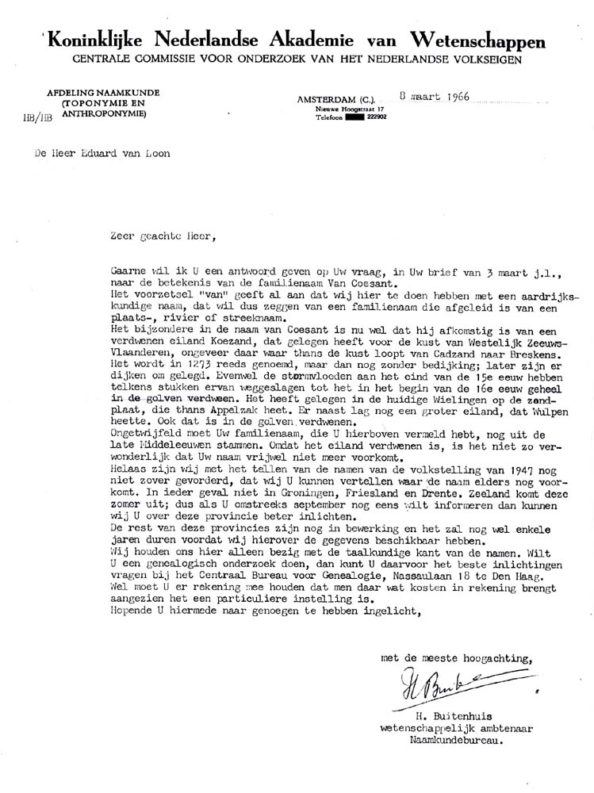

Wisten jullie: dat er zelfs een boot naar ons vernoemd is: Dit vond ik op het
inernet.
35 RIJKSWATERSTAAT TE WATER EN DE SCHEEPVAARTDIENST
Bij de brug van Sluiskil mag je naar boven in de toren waar de brugwachter werkt.
Hopelijk komt er een boot, dan kunnen we de brug open zetten!
Daarna stappen we op de Coesant een boot van Rijkswaterstaat en varen we over het kanaal van Gent naar
Terneuzen.
We meten de diepte en wie zit er achter het roer? (let op deze Roefelplaats duurt de hele middag)
Naar aanleiding van dat stukje over de boot de Coesant heb ik navraag gedaan bij rijkswaterstaat, en dit kwam eruit: eigenlijk had ik het vermoeden al maar wilde daar een bevestiging van .
Van: Informatielijn Rijkswaterstaat <rijkswaterstaat_support@mailnj.custhelp.com>
Antwoorden aan: Informatielijn Rijkswaterstaat <rijkswaterstaat_support@mailnj.custhelp.com>
Verzonden: maandag 24 januari 2005 17:15:03
Aan: coesant@hotmail.com
Onderwerp: informatie Rijkswaterstaat [Melding: 050120-000030]
Geachte meneer, mevrouw,
U heeft recentelijk een melding gedaan bij de Landelijke Informatielijn van Rijkswaterstaat.
Naar aanleiding hiervan treft u hieronder de reactie.
Wij gaan ervan uit u hiermee van dienst te zijn geweest.
Met vriendelijke groet,
Rijkswaterstaat Landelijke Informatielijn
Onderwerp
informatie Rijkswaterstaat
Subproces discussie
Reactie 24/01/2005 05:15 PM
Hierbij reactie op uw vraag. De Coesant is inderdaad een boot die door de dienstkring Zeeuwsch-Vlaanderen wordt gebruikt. Na enig speurwerk heb ik ook de herkomst van de naam kunnen achterhalen. Coesant was in lang vervlogen tijden een eilandje voor de kust van Cadzand (badplaats aan de kust van
Zeeuws-Vlaanderen). Op oude kaarten van Zeeland wordt dit eilandje nog aangegeven.
Uw melding (Uw melding) 20/01/2005 10:45 AM
uw mail van 20.01.2005:
Hallo,
Ik heb zo'n vermoeden dat ik een vrij ongewone vraag heb, het gaat namelijk hierom, mijn achternaam is van
Coesant, en nu las ik op het internet dat er een boot van rijkswaterstaat ook
Coesant heet, ik doe ook een stamboomonderzoek naar onze familienaam op het internet en daarom vroeg ik me af of jullie de oorsprong van die naam van die boot aan mij kunnen vertellen.
Hartelijke groetjes en bij voorbaat
dank Nanny
Het was 17 november 2006
en zoals ik wel vaker doe was ik aan het surfen op het net en toen kwam ik een
foto tegen van de boot: ik ben er weer blij mee!!!
Het hierna
volgende stukje had ik ook al eerder op het internet gevonden:
Koezand Eiland in de monding van de Westerschelde. In het voorjaar van 1344 arriveerde het dijkleger op de schorren van Koezand. Die bedijking vond plaats in opdracht van vier particuliere investeerders. Onder hen was een ambtenaar van de stad Brugge. De hoogte van de dijk was 10 voet, iets meer dan drie meter. De kruinbreedte kwam op zeven voet, iets meer dan twee meter. De oorkonde waarin wordt gesproken over de bedijking van Koezand is, voor zo ver bekend, het eerste geschreven stuk waarin over de afmetingen van toenmalige zeedijken wordt gesproken. Ook de organisatie van het polderbestuur werd tot in details geregeld. In de eerste jaren woonde er achtentwintig pachters op Koezand. Ze hadden het niet breed. Overstromingen deden al tijdens de eerste jaren veel land verloren gaan. En ook nadien volgde een harde strijd om het behoud van het eiland. In 1276 konden de pachters de kosten van de dijk niet meer opbrengen. De pachtprijs werd gehalveerd. Een zeearm die Hedensee heette, scheidde de eilanden Koezand en Wulpen van elkaar. Nadat het eiland overstroomt raakte is het aan het eiland Wulpen vastgedijkt. Het verdween tijdens de Allerheiligenvloed van 1570 in de golven.
Tevens ook dit stukje ter informatie van de ligging:
Een van de vier verdronken dorpen op het eiland Wulpen. Dit eiland lag in de Middeleeuwen voor de kust van Zeeuws-Vlaanderen. Ten noorden van Wulpen lag het eiland Koezand. Ten noordwesten bevond zich het eiland Schoneveld. Rond 1570 ging Wulpen als eiland ten onder. De laatste resten waren aan het eind van de zeventiende eeuw verdwenen.

Deze brief heb ik vandaag 9 Januari 2003 ontvangen van Mijn neef Eduard van Loon, Bedankt Eduard!!!